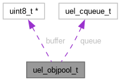

uel_objpool_t Struct Reference
Pre-allocated memory bound to speciffic types suitable for providing dynamic object management in the stack. More...
Collaboration diagram for uel_objpool_t:

Data Fields | |
| uint8_t * | buffer |
| The buffer that contains each object managed by this pool. | |
| uel_cqueue_t | queue |
| The queue containing the addresses for each object in the pool. | |
Detailed Description
Pre-allocated memory bound to speciffic types suitable for providing dynamic object management in the stack.
Object pools are arrays of objects that are pre-allocated in the stack at compile time as an alternative to runtime memory allocation for dynamic object management.
To efficiently release and acquire objects from a pool, their addresses are kept in a circular queue that is fully populated during initialisation.
The documentation for this struct was generated from the following file:
- include/uevloop/utils/object-pool.h
Generated by